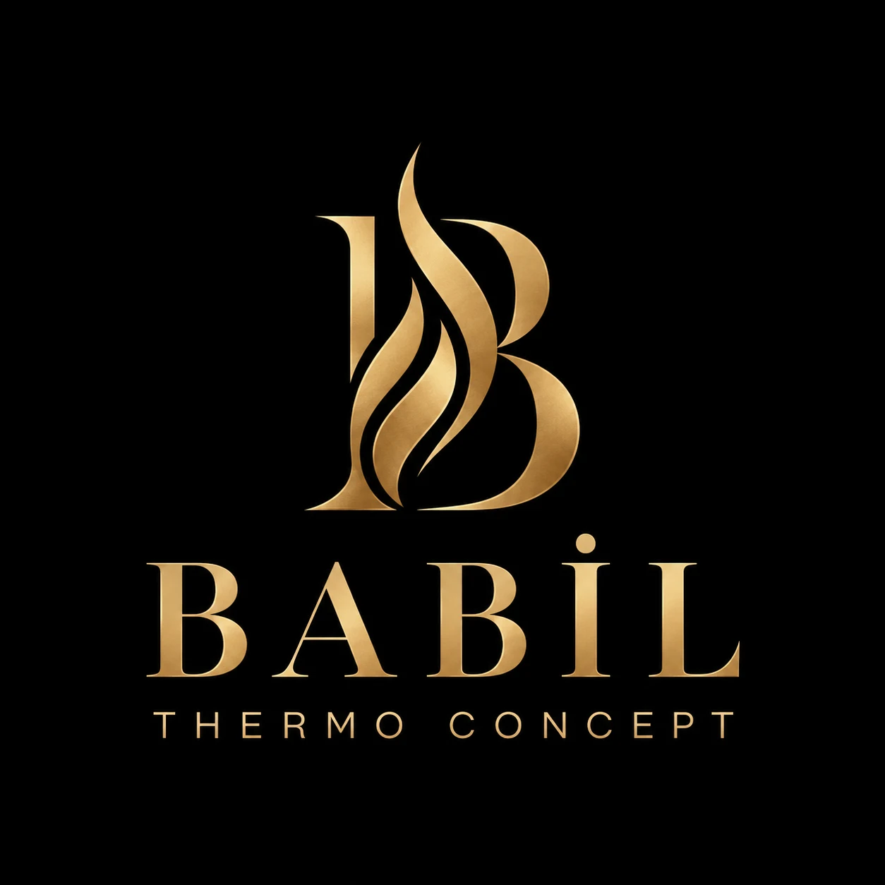

Dalaman / Muğla

Tanışalım.
Bağlantıda
kalalım.
İletişim, mağaza bilgileri ve dijital kartvizit. İhtiyacınız olan bağlantılar tek bir yerde.

İletişim, mağaza bilgileri ve dijital kartvizit. İhtiyacınız olan bağlantılar tek bir yerde.